정보처리기사(구) (2003-08-31 기출문제)
1과목: 데이터 베이스
1. Embedded-SQL의 설명으로 옳지 않은 것은?
- 응용프로그램 내에 데이터를 정의하거나 질의하는 SQL 문장을 내포하여 프로그램이 실행될 때 함께 실행되도록 한다.
- Host Program의 컴파일시 선행처리기에 의해 내장 SQL 문은 분리되어 컴파일 된다.
- 호스트 변수와 데이터베이스 필드의 이름은 같아도 된다.
- 내장 SQL 문의 호스트 변수의 데이터 타입은 이에 대응하는 데이터베이스 필드의 SQL 데이터 타입과 일치하지 않아도 된다.
(정답률: 68%)

2. 스택(stack)의 응용 분야와 거리가 먼 것은?
- 인터럽트의 처리
- 수식의 계산
- 서브루틴의 복귀번지 저장
- 운영체제의 작업 스케줄링
(정답률: 66%)
3. 뷰(View)에 대한 설명으로 거리가 먼 것은?
- 물리적인 테이블로 관리가 편하다.
- 여러 사용자의 상이한 응용이나 요구를 지원해 준다.
- 사용자의 데이터 관리를 간단하게 해 준다.
- 숨겨진 데이터를 위한 자동 보안이 제공된다.
(정답률: 68%)
4. 자료(data)와 정보(information)에 대한 설명으로 가장 적절한 것은?
- 정보란 자료를 처리해서 얻을 수 있는 결과이다.
- 자료란 적절한 의사 결정의 수단으로 사용될 수 있는 지식이다.
- 정보란 현실 세계에 존재하는 가공하지 않은 그대로의 모습을 의미한다.
- 자료와 정보는 같은 의미이다.
(정답률: 70%)
5. 릴레이션은 참조할 수 없는 외래키 값을 가질 수 없음을 의미하는 제약조건은?
- 개체 무결성
- 참조 무결성
- 보안 무결성
- 정보 무결성
(정답률: 83%)
6. 다음 [ ]에 적당한 SQL 문장은?
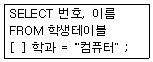
- SET
- GROUP
- WITH
- WHERE
(정답률: 84%)
7. 데이터베이스를 공용하기 위한 데이터 제어를 정의하고 기술하는 언어는?
- DDL(data definition language)
- DML(data manipulation language)
- DCL(data control language)
- DUL(data user language)
(정답률: 50%)
8. 스키마(schema)에 대한 설명으로 옳지 않은 것은?
- 스키마(schema) - 데이터베이스의 구조와 제약 조건에 대한 명세(specification)를 기술한 것이다.
- 외부 스키마(external schema) - 전체 데이터베이스의 한 논리적인 부분으로 볼 수 있으므로 서브스키마(subschema)라고도 한다.
- 내부 스키마(internal schema) - 사용자나 응용 프로그래머가 접근할 수 있는 정의를 기술한다.
- 개념 스키마(conceptual schema) - 데이터베이스 접근권한, 보안 정책, 무결성 규칙을 명세화 한다.
(정답률: 53%)
9. 다음 빈칸에 들어갈 가장 적절한 용어는?
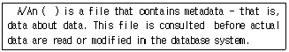
- view
- index
- ISAM file
- data dictionary
(정답률: 67%)
10. 다음 설명은 어떤 연산에 대한 것인가?
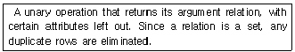
- project
- division
- select
- join
(정답률: 35%)
11. 순차 리스트(sequential list)가 아닌 것은?
- 배열(array)
- 트리(tree)
- 데크(deque)
- 스택(stack)
(정답률: 62%)
12. 데이터베이스 관리자의 역할로 거리가 먼 것은?
- 사용자의 요구 및 불평해결
- 데이터베이스의 이상 현상 감시
- 장애시 회복에 대한 전략 수립
- 응용 프로그램 구현
(정답률: 78%)
13. DBMS의 필수 기능에 해당하지 않는 것은?
- 정의 기능(definition facility)
- 관계 기능(relation facility)
- 제어 기능(control facility)
- 조작 기능(manipulation facility)
(정답률: 78%)
14. 1의 보수에 의한 표현 방식으로 (-15)10를 옳게 표현한 것은?
- 0000 0000 0000 1111(2진수)
- 0111 1111 1111 0000(2진수)
- 1000 0000 0000 1111(2진수)
- 1111 1111 1111 0000(2진수)
(정답률: 54%)
15. 데이터의 가장 작은 논리적 단위로서 파일 구조상의 데이터 항목 또는 데이터 필드에 해당하는 것은?
- tuple
- relation
- domain
- attribute
(정답률: 55%)
16. 분산데이터베이스에서 사용자는 데이터가 물리적으로 저장되어 있는 곳을 알 필요 없이 논리적인 입장에서 데이터가 모두 자신의 사이트에 있는 것처럼 처리하는 특성을 무엇이라 하는가?
- 지역 자치성(local autonomy)
- 위치 독립성(location independence)
- 단편 독립성(fragmentation independence)
- 중복 독립성(replication independence)
(정답률: 70%)
17. 트랜잭션의 특성 중 다음 내용에 해당되는 것은?『시스템이 가지고 있는 고정요소는 트랜잭션 수행 전과 트랜잭션 수행 완료 후에 같아야 한다는 특성』
- 원자성(atomicity)
- 일관성(consistency)
- 격리성(isolation)
- 영속성(durability)
(정답률: 74%)
18. E-R Diagram의 구성 요소에 대한 설명 중 잘못된 것은?
- 사각형 : 개체의 유형
- 마름모(다이아몬드) : 개체의 속성
- 원 : 개체의 속성
- 선(링크) : 구성 요소간의 연결
(정답률: 78%)
19. 데이터베이스 설계단계의 순서로 알맞은 것은?
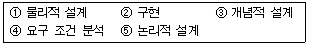
- ③-⑤-④-①-②
- ④-①-③-⑤-②
- ④-③-⑤-①-②
- ③-⑤-①-④-②
(정답률: 88%)
20. 분산 데이터베이스의 장점으로 거리가 먼 것은?
- 데이터베이스 관련 소프트웨어 개발비용 감소
- 신뢰성(Reliability)과 가용성(Availability) 향상
- 질의처리(query processing) 시간의 단축
- 데이터의 공유성 향상
(정답률: 77%)
2과목: 전자 계산기 구조
21. 다음은 인터럽트 체제의 동작을 나열하였다. 수행 순서를 올바르게 표현한 것은?
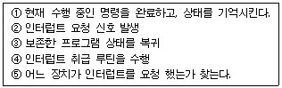
- ②→⑤→①→④→③
- ②→①→④→⑤→③
- ②→①→⑤→④→③
- ②→④→①→⑤→③
(정답률: 71%)
22. 일반적인 컴퓨터의 CPU 구조 가운데 수식을 계산할 때 수식을 미리 처리되는 순서인 역 polish(또는 postfix) 형식으로 바꾸어야 하는 CPU 구조는?
- 단일 누산기 구조 CPU
- 범용 레지스터 구조 CPU
- 스택 구조 CPU
- 모든 CPU 구조
(정답률: 63%)
23. 인스트럭션의 수행시 유효 주소를 구하기 위한 메이저 상태를 무엇이라 하는가?
- Fetch 메이저 상태
- Execute 메이저 상태
- Indirect 메이저 상태
- Interrupt 메이저 상태
(정답률: 47%)
24. 주기억장치에 사용되는 양극 소자나 MOS형 기억 소자는 보조기억장치와 비교하여 어떠한 특성을 가지는가?
- 동작속도가 빠르고, 가격은 비슷하다.
- 동작속도가 일정하나 가격이 저렴하다.
- 동작속도가 빠르고, 가격이 저렴하다.
- 동작속도가 빠르고, 가격이 비싸다.
(정답률: 70%)
25. 프론트-엔드 처리기(Front-end processor)에 관한 설명중 옳지 않은 것은?
- 자료처리 기능은 전혀 없다.
- 자체에서 프로그램이 가능하다.
- 자료 채널 기능보다 확장된 것이다.
- 여러 가지 주변장치를 중앙처리장치에 쉽게 연결할 수 있도록 한다.
(정답률: 25%)
26. 명령어가 오퍼레이션 코드(OP code) 6비트, 어드레스 필드 16비트로 되어 있다. 이 명령어를 쓰는 컴퓨터의 최대 메모리 용량은?
- 16K word
- 32K word
- 64K word
- 1M word
(정답률: 65%)
27. 인터럽트 처리 과정 중 하드웨어를 이용하여 우선순위를 결정하는 장치는?
- 폴링 방법
- 스택에 의한 방법
- 데이지 체인을 이용한 방법
- 장치번호 디코더에 의한 방법
(정답률: 55%)
28. 기억장치의 구조가 stack 구조를 가질 때 가장 밀접한 관계가 있는 명령어는?
- one-address 명령어
- two-address 명령어
- three-address 명령어
- zero-address 명령어
(정답률: 49%)
29. 명령을 수행하기 위해 CPU내의 레지스터와 플래그의 상태 변환을 일으키는 작업을 무엇이라 하는가?
- fetch
- program operation
- micro operation
- count operation
(정답률: 50%)
30. 동기 가변식(Synchronous Variable) 동작에 대한 설명 중 옳지 않은 것은?
- 각 마이크로 오퍼레이션의 사이클 타임이 현저한 차이를 나타낼 때 사용한다.
- 모든 마이크로 오퍼레이션의 수행 시간이 유사한 경우에 사용된다.
- 중앙처리장치의 시간을 효율적으로 이용할 수 있다.
- 마이크로 오퍼레이션에 대하여 서로 다른 사이클을 정의 할 수 있다.
(정답률: 48%)
31. 2진수 11011을 그레이 코드로 변환한 것은?
- 11101
- 10110
- 10001
- 11011
(정답률: 63%)
32. 기억장치 중 CAM(Content Addressable Memory)이라고 하는 것은?
- cache 기억장치
- associative 기억장치
- 가상기억장치
- 주 기억장치
(정답률: 58%)
33. 기억장치의 자료처리 속도를 나타내는 밴드 폭(bandwidth)이란?
- 계속적으로 기억장치에서 데이터를 읽거나 기억 시킬 때 1초 동안에 사용되는 비트수
- 필요에 따라 주기억장치에 사용되는 바이트의 사용량이다. 1초 동안에 사용되는 워드(word)의 사용량
- 임시로 사용하는 기억장치의 용량 1초 동안에 사용되는 븍록의 사용량
- 계속적으로 사용되는 데이터의 사용량을 1분 동안에 사용하는 바이트의 수를 표시
(정답률: 54%)
34. 다음 중 DMA의 설명이 옳지 않은 것은?
- DMA는 Direct memory access의 약자이다.
- DMA는 기억장치와 주변장치 사이의 직접적인 데이터 전송을 제공한다.
- DMA는 블록으로 대용량의 데이터를 전송할 수 있다.
- DMA는 입출력 전송에 따른 CPU의 부하를 증가시킬 수 있다.
(정답률: 62%)
35. 인터럽트 수행 후에 처리되는 것은?
- 전원을 다시 동작시킨다.
- 모니터 화면에 인터럽트 종류를 디스플레이 한다.
- 메모리 내용을 지워 다른 프로그램이 적재될 수 있도록 한다.
- 인터럽트 처리시 보존시켰던 PC 및 제어 상태 데이터를 PC와 제어상태 레지스터에 복구한다.
(정답률: 75%)
36. Associative 기억장치의 특징으로 옳은 것은?
- 값이 싸다.
- 구조 및 동작이 간단하다.
- 명령어를 순서대로 기억시킨다.
- 저장된 정보의 주소보다 내용 자체로 검색
(정답률: 65%)
37. 프로그램 카운터가 명령어의 번지와 더해져서 유효번지를 결정하는 어드레싱 모드(addressing mode)는?
- 레지스터 모드
- 상대번지 모드
- 간접번지 모드
- 인덱스 어드레싱 모드
(정답률: 53%)
38. 컴퓨터 시스템에서 시스템 내부의 순간순간의 상태를 기록하고 있는 정보를 무엇이라고 하는가?
- 수퍼바이저 콜(supervisor call)
- 인터럽트 워드
- PSW(Program Status Word)
- 제어 라이브러리
(정답률: 77%)
39. 논리회로를 바르게 표시한 논리식은?
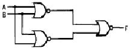
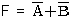
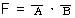
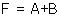
(정답률: 48%)
40. 다음의 마이크로 오퍼레이션과 관련 있는 것은?
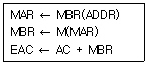
- AND
- ADD
- JMP
- BSA
(정답률: 57%)
3과목: 운영체제
41. PCB가 포함하고 있는 정보가 아닌 것은?
- 프로세스의 현 상태
- 중앙처리장치 레지스터 보관 장소
- 할당된 자원에 대한 포인터
- 프로세스의 사용 빈도
(정답률: 51%)
42. UNIX 운영체제의 특징이 아닌 것은?
- 높은 이식성
- 계층적 파일 시스템
- 단일 작업용 시스템
- 네트워킹 시스템
(정답률: 74%)
43. 기억장치를 인터리빙(interleaving)하는 주된 목적은?
- 프로그램 재배치가 용이하다.
- 주기억장치의 보안을 위함이다.
- 주기억장치의 액세스 속도를 빠르게 한다.
- 결함 허용에 의한 기억장치 신뢰도를 향상시킨다.
(정답률: 69%)
44. 태스크 스케줄링 방법 중 Round-Robin 방식에 대한 설명으로 옳지 않은 것은?
- FIFO 방식으로 선점(preemptive)형 기법이다.
- 처리하여야 할 작업의 양이 가장 작은 프로세스에게 cpu를 할당하는 기법이다.
- 대화식 사용자에게 적당한 응답시간을 보장한다.
- 시간할당량이 작을 경우 문맥교환에 따른 오버헤드가 커진다.
(정답률: 46%)
45. UNIX에서 명령어를 백그라운드로 수행시킬 때 가장 큰 장점은?
- 기억장치를 작게 차지한다.
- CPU를 독점적으로 사용할 수 있다.
- 해당 명령문의 수행시간을 단축할 수 있다.
- 수행중인 명령문이 끝나기 전에 다른 명령문을 줄 수 있다.
(정답률: 61%)
46. 운영체제에서 교착상태가 발생하기 위한 조건이 아닌 것은?
- 한 번에 한 프로세스만이 어떤 자원을 사용할 수 있다
- 프로세스는 다른 자원이 할당되기를 기다리는 동안 이미 확보한 자원을 계속 보유하고 있다.
- 자원을 보유하고 있는 프로세서로 부터 다른 프로세스가 강제로 그 자원을 빼앗을 수 있다.
- 자원들을 요구하는 프로세스와 그 자원을 사용 중인 프로세스의 관계를 방향성 그래프로 그리면 닫힌 환형(closed chain)이 된다.
(정답률: 54%)
47. UNIX에서 커널의 기능이 아닌 것은?
- 입, 출력 관리
- 명령어 해석 및 실행
- 기억장치 관리
- 프로세스 관리
(정답률: 66%)
48. 다음의 디스크 스케줄링 중 현재 진행중인 방향으로 가장 짧은 탐색 거리에 있는 요청을 먼저 서비스하는 기법은?
- SSTF
- SCAN
- C-SCAN
- FCFS
(정답률: 26%)
49. 구역성(locality)에 대한 설명으로 옳지 않은 것은?
- 실행 중인 프로세스가 일정 시간 동안에 참조하는 페이지의 집합을 의미한다.
- 시간 구역성과 공간 구역성이 있다.
- 캐쉬 메모리 시스템의 이론적 근거이다.
- Denning 교수에 의해 구역성의 개념이 증명되었다.
(정답률: 50%)
50. 주기억장치 관리기법인 First-fit, Best-fit, Worst-fit 방법을 각각 적용할 경우 10K의 프로그램이 할당될 부분으로 옳게 짝지어진 것은?
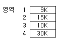
- 2-3-4
- 2-2-3
- 2-3-2
- 2-1-4
(정답률: 87%)
51. 운영체제의 설명으로 옳지 않은 것은?
- 운영체제는 컴퓨터 사용자와 컴퓨터 하드웨어간의 인터페이스로서 동작하는 일종의 하드웨어 장치다.
- 운영체제는 컴퓨터를 편리하게 사용하고 컴퓨터 하드웨어를 효율적으로 사용할 수 있도록 한다.
- 운영체제는 스스로 어떤 유용한 기능도 수행하지 않고 다른 응용프로그램이 유용한 작업을 할 수 있도록 환경을 마련하여 준다.
- 운영체제는 중앙처리장치의 시간, 메모리 공간, 파일 기억장치 등의 자원을 관리한다.
(정답률: 61%)
52. 어셈블러를 두 개의 패스(pass)로 구성하는 주된 이유는?
- 한 개의 패스만을 사용하면 프로그램의 크기가 증가하여 유지보수가 어렵기 때문
- 한 개의 패스만을 사용하면 프로그램의 크기가 증가하여 처리속도가 감소하기 때문
- 한 개의 패스만을 사용하면 기호를 모두 정의한 뒤에 해당 기호를 사용해야만 하기 때문
- 패스 1, 2의 어셈블러 프로그램이 작아서 경제적이기 때문
(정답률: 51%)
53. 윈도 시스템에서 파일이나 하위 디렉토리가 디스크에서 어떤 위치에 저장되어 있는지의 위치 정보를 저장하는 테이블은?
- Cluster
- FAT
- Sector
- Boot
(정답률: 47%)
54. 128개의 CPU로 구성된 하이퍼큐브에서 각 CPU는 몇 개의 연결점을 갖는가?
- 6
- 7
- 8
- 10
(정답률: 69%)
55. 메모리 관리기법 중에서 서로 떨어져 있는 여러 개의 낭비 공간을 모아서 하나의 큰 기억 공간을 만드는 작업을 무엇이라고 하는가?
- Swapping
- Coalescing
- Compaction
- Paging
(정답률: 51%)
56. 현재 헤드의 위치가 50에 있고 트랙 0번 방향으로 이동하며 요청 대기 열에는 아래와 같은 순서로 들어 있다고 가정할 때 SSTF(Shortest Seek Time First) 스케줄링 알고리즘에 의한 헤드의 총 이동거리는 얼마인가?
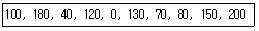
- 790
- 380
- 370
- 250
(정답률: 49%)
57. 분산시스템의 위상에 따른 분류 방식 중에서 아래 설명은 어떤 방식에 관한 것인가?
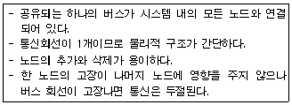
- Ring Connected
- Multiaccess bus Connected
- Partially Connected
- Fully Connected
(정답률: 68%)
58. 컴퓨터 시스템에서 사용되는 자원들(파일, 프로세스, 메모리 등)에 대하여 불법적인 접근방지와 손상 발생 방지를 목적으로 하는 자원보호 방법의 일반적인 기법이 아닌 것은?
- 접근 제어 리스트(access control list)
- 접근 제어 행렬(access control matrix)
- 권한 리스트(capability list)
- 권한 제어 행렬(capability control matrix)
(정답률: 45%)
59. LRU 기법을 이용하여 페이지 교체 기법을 사용하는 시스템에서 새로운 페이지를 적재하고자 한다. 어떤 페이지를 교체하여야 하는가?
- 가장 최근에 적재된 페이지를 교체한다.
- 가장 참조회수가 적은 페이지를 교체한다.
- 가장 오랫동안 참조되지 않은 페이지를 교체한다.
- 앞으로 참조되지 않을 페이지를 교체한다.
(정답률: 68%)
60. SJF 스케줄링 방법에 대한 설명으로 거리가 먼 것은?
- 작업이 끝나기까지의 실행시간 추정치가 가장 작은 작업을 먼저 실행시킨다.
- 작업 시간이 큰 경우 오랫동안 대기하여야 한다.
- 각 프로세서의 프로세서 요구시간을 미리 예측하기 쉽다.
- FIFO 기법보다 평균대기 시간이 감소된다.
(정답률: 44%)
4과목: 소프트웨어 공학
61. 모듈(module)의 응집도(cohesion)가 약한 것 부터 강한 순서로 옳게 나열된 것은?
- 기능적응집 => 시간적응집 => 논리적응집
- 시간적응집 => 기능적응집 => 논리적응집
- 논리적응집 => 시간적응집 => 기능적응집
- 논리적응집 => 기능적응집 => 시간적응집
(정답률: 40%)
62. 자료흐름도의 구성요소가 아닌 것은?
- 소단위명세서
- 단말
- 프로세스
- 자료저장소
(정답률: 58%)
63. 소프트웨어의 위기를 해결하기 위해 개발의 생산성이 아닌 유지보수의 생산성으로 해결하려는 방법을 의미하는 것은?
- 소프트웨어 재사용
- 소프트웨어 재공학
- 클라이언트/서버 소프트웨어 공학
- 전통적 소프트웨어공학
(정답률: 68%)
64. 폭포수 모형(waterfall model)의 진행 단계로 옳은 것은?
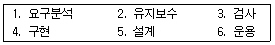
- 1-5-3-4-6-2
- 5-1-4-3-2-6
- 5-1-3-4-6-2
- 1-5-4-3-6-2
(정답률: 59%)
65. 소프트웨어 형상관리(configuration management)에 관한 설명으로 가장 거리가 먼 것은?
- 소프트웨어에서 일어나는 수정이나 변경을 알아내고 제어하는 것을 의미한다.
- 유지보수 단계에서 행해진다.
- 형상관리를 위하여 구성된 팀을 책임프로그래머 팀(chief programmer team)이라고 한다.
- 형상관리에서 중요한 기술 중의 하나는 버전 제어기술이다.
(정답률: 60%)
66. 소프트웨어 개발 단계에서 가장 많은 비용이 소요되는 단계는?
- 계획단계
- 분석단계
- 구현단계
- 유지보수단계
(정답률: 75%)
67. 모듈이 파라미터나 인수로 다른 모듈에게 데이터를 넘겨주고 호출 받은 모듈은 받은 데이터에 대한 처리 결과를 다시 돌려주는 유형의 모듈 결합도(coupling)를 무엇이라고 하는가?
- 내용 결합도
- 외부 결합도
- 제어 결합도
- 데이터 결합도
(정답률: 58%)
68. 구조적 분석 도구와 거리가 먼 것은?
- 자료 사전
- 자료 흐름도
- 프로그램 명세서
- 소단위 명세서
(정답률: 29%)
69. 소프트웨어 품질관리 기술에서 품질목표의 항목과 거리가 먼 것은?
- 정확성
- 유지보수성
- 무결성
- S/W 종속성
(정답률: 71%)
70. 시스템을 설계할 때 필요한 설계 지침으로 두 모듈간의 상호 의존도를 나타내는 것은?
- 결합도
- 응집도
- 신뢰도
- 종합도
(정답률: 56%)
71. 소프트웨어 수명주기 모형 중 폭포수 모형에 대한 설명으로 옳지 않은 것은?
- 적용사례가 많다.
- 단계별 정의가 분명하다.
- 단계별 산출물이 명확하다.
- 요구사항의 변경이 용이하다.
(정답률: 76%)
72. ASCII file을 print하는 method를 갖고 있는 object, binary file을 print하는 method를 갖고 있는 object, picture file을 print하는 method를 갖고 있는 object들은 모두 "print"라는 method를 갖고 있으므로 "print"란 메시지를 받으면 수행을 하게 된다. 그러나 각각의 method에서 print를 수행하는 방법은 모두 다를 것이다. 객체지향 시스템에서 이와 같이 서로 다른 class들이 같은 의미의 응답을 하는 특성을 무엇이라고 하는가?
- 캡슐화(Encapsulation)
- 상속성(Inheritance)
- 다형성(Polymorphism)
- 추상화(Abstraction)
(정답률: 56%)
73. CASE(Computer-Aided Software Engineering)에 대한 설명으로 옳지 않은 것은?
- 소프트웨어 개발의 작업들을 자동화하는 것이다.
- 소프트웨어 도구와 방법론의 결합이다.
- 소프트웨어의 생산성 문제를 해결할 수 있다.
- 개발과정이 빠른 대신 재사용성이 떨어진다.
(정답률: 77%)
74. S/W Project 일정이 지연된다고 해서 Project 말기에 새로운 인원을 추가 투입하면 Project는 더욱 지연되게 된다고 주장하는 법칙은?
- Putnam의 법칙
- Mayer의 법칙
- Brooks의 법칙
- Boehm의 법칙
(정답률: 76%)
75. 어떤 시스템의 운용 기간이 다음과 같을 때 신뢰도를 계산하면 얼마인가?
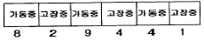
- 0.75
- 0.25
- 9.3
- 7
(정답률: 61%)
76. NS(Nassi-Schneiderman) chart에 대한 설명으로 거리가 먼 것은?
- 논리의 기술에 중점을 둔 도형식 표현 방법이다.
- 연속, 선택 및 다중 선택, 반복 등의 제어논리 구조로 표현한다.
- 주로 화살표를 사용하여 논리적인 제어구조로 흐름을 표현 한다.
- 조건이 복합되어 있는 곳의 처리를 시각적으로 명확히 식별하는데 적합하다.
(정답률: 49%)
77. 소프트웨어 재사용의 잇점에 속하지 않는 것은?
- 소프트웨어의 품질 향상
- 소프트웨어의 개발시간과 비용감소
- 소프트웨어의 생산성 증가
- 소프트웨어 프로그래밍 언어의 종속
(정답률: 73%)
78. 람바우의 객체 지향 분석 모델링에 해당하지 않는 것은?
- relational modeling
- object modeling
- functional modeling
- dynamic modeling
(정답률: 57%)
79. 유지보수의 종류 중 소프트웨어 산물의 수명 기간 중에 발생하는 환경의 변화를 기존의 소프트웨어 산물에 반영하기 위하여 수행하는 활동을 의미하는 것은?
- 적응(adaptive) 유지보수
- 완전(perfective) 유지보수
- 정정(corrective) 유지보수
- 예방(preventive) 유지보수
(정답률: 67%)
80. 중앙 집중형 팀 구성에서 역할 분담에 관한 설명 중 옳지 않은 것은?
- 책임 프로그래머 : 분석 및 설계, 기술적 판단, 작업지시와 배분을 담당
- 보조 프로그래머 : 프로그램 리스트, 설계문서, 검사계획 등을 관리
- 프로그래머 : 원시코드작성, 검사, 디버깅, 문서 작성 담당
- 프로그램 사서 : 컴파일, 디버깅, 목적프로그램 작성
(정답률: 55%)
5과목: 데이터 통신
81. 멀티드롭 선로에 연결할 수 있는 단말기의 수를 결정하는 요인이 아닌 것은?
- 선로의 길이
- 선로의 속도
- 단말기에 의해 생기는 교통량
- 하드웨어와 소프트웨어의 처리 능력
(정답률: 41%)
82. 서비스, 응답, 경보 및 휴지 상태 복귀 신호 등의 기능을 수행하는 제어신호는?
- 감시 제어신호(supervisory control signal)
- 주소 제어신호(address control signal)
- 호 정보 제어신호(call information control signal)
- 망관리 제어신호(communication management control signal)
(정답률: 51%)
83. TCP/IP 네트워크를 구성하기 위해 1개의 C 클래스 주소를 할당 받았다. C 클래스 주소를 이용하여 네트워크 상의 호스트들에게 실제로 할당할 수 있는 최대 IP 주소의 개수는?
- 253개
- 254개
- 255개
- 256개
(정답률: 37%)
84. 대역폭(bandwidth)에 관한 설명으로 옳은 것은?
- 최고 주파수를 의미한다.
- 최저 주파수를 의미한다.
- 최고 주파수의 절반을 의미한다.
- 최고 주파수와 최저 주파수 사이 간격을 의미한다.
(정답률: 77%)
85. 정보통신망의 서비스 부분 중 광범위하게 분산 되어있는 컴퓨터 시스템, 프로그램 또는 데이터 등의 각종 지원을 통신 선로를 거쳐서 이용함을 목적으로 하는 서비스는?
- 조회 처리 서비스
- 정보 처리 서비스
- 정보 제공 서비스
- 네트워크 서비스
(정답률: 60%)
86. 패킷 교환망의 주요 기능으로 옳지 않는 것은?
- 경로선택 제어
- 트래픽 제어
- 에러 제어
- 액세스 제어
(정답률: 28%)
87. 쿼드비트를 사용하여 1,600 [baud]의 변조속도를 지니는 데이터 신호가 있다. 이 때 데이터 신호 속도[bps]는?
- 2,400
- 3,200
- 4,800
- 6,400
(정답률: 62%)
88. 전진 에러 수정(FEC:Forward Error Correction) 방식에서 에러를 수정하기 위해 사용하는 방식은?
- 해밍 코드(Hamming Code)의 사용
- 압축(compression)방식 사용
- 패리티 비트(Parity Bit)의 사용
- Huffman Coding 방식 사용
(정답률: 57%)
89. 정지화상 압축 기술의 표준은?
- MPEG
- JPEG
- H261
- G711
(정답률: 57%)
90. 회선 제어 방식 중 가장 간단한 형태로 회선의 접근을 위해 서로 경쟁하는 방식의 대표적인 시스템은?
- ALOHA 시스템
- Roll-call 폴링 시스템
- Hub-go-ahead 폴링 시스템
- Selection 시스템
(정답률: 47%)
91. 정보통신 기술발전에 의해 출현한 정보화의 한 형태로서, 한 건물 또는 공장, 학교 구내, 연구소 등의 일정지역 내의 설치된 통신망으로서 각종 기기 사이의 통신을 실행하는 통신망은?
- LAN
- WAN
- MAN
- ISDN
(정답률: 72%)
92. 모뎀을 이용하여 단말기간의 통신시 단말기와 모뎀 사이의 신호 중 RTS는 무엇을 뜻하는가?
- 송신할 데이터가 없다.
- 수신할 데이터가 없다.
- 송신할 데이터가 있다.
- 수신할 데이터가 있다.
(정답률: 39%)
93. 전송을 위한 5단계의 제어 절차 중 제 3 단계는?
- 데이터링크의 종결
- 정보 메시지의 전송
- 데이터링크의 설정
- 데이터 통신회선의 절단
(정답률: 76%)
94. 다중화 방식 중 각 채널 할당 시간이 공백인 경우(idle time) 다음 차례에 의한 연속 전송이 가능하여 전송 전달 시간을 빠르게 하는 방식은?
- 코드 분할다중화
- 주파수 분할다중화
- 동기식 시분할다중화
- 비동기식 시분할다중화
(정답률: 42%)
95. 동기식 전송 방식의 구성 형식은 동기 문자와 제어정보, 데이터 블록으로 구성되는데 이러한 구성 형식을 무엇이라 하는가?
- 플래그
- 패리티
- 프레임
- 사이클
(정답률: 51%)
96. HDLC 데이터 전송 모드의 동작 모드가 아닌 것은?
- 정규 응답 모드(Normal Response Mode)
- 동기 응답 모드(Synchronous Response Mode)
- 비동기 응답 모드(Asynchronous Response Mode)
- 비동기 평형 모드(Asynchronous Balanced Mode)
(정답률: 47%)
97. 지능 다중화기의 설명 중 옳지 않은 것은?
- 실제 보낼 데이터가 있는 DTE에만 각 부 채널에 시간 폭을 할당한다.
- 주소제어, 흐름제어, 오류제어 등의 기능이 제공된다.
- 실제 전송할 데이터가 있는 부 채널에만 시간 폭을 할당하므로 많은 데이터 전송이 가능하다.
- 가격이 싸고, 접속에 소요되는 시간이 길어진다.
(정답률: 69%)
98. 망(network) 구조의 기본 유형이 아닌 것은?
- 스타형
- 링형
- 트리형
- 십자형
(정답률: 70%)
99. 여러 개의 채널을 몇 개의 소수 회선으로 공유화시키는 장치는?
- 다중화기
- 집중화기
- 변복조기
- 선로 공동 이용기
(정답률: 47%)
100. 통신 양단간(end-to-end)의 에러제어와 흐름제어를 하는 계층은?
- 응용 계층
- 네트워크 계층
- 물리 계층
- 트랜스포트 계층
(정답률: 41%)